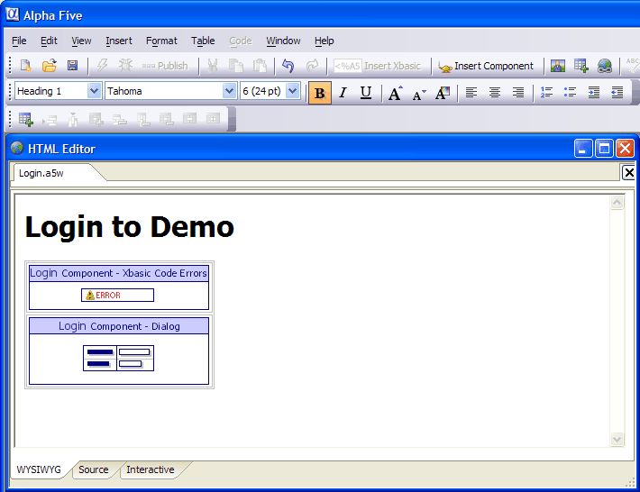

Creating the NewLogin.A5W Page
The NewLogin.A5W page will contain a login component. It will ask for the user's login and password. If the login is successful, it will redirect the user to the DemoNavigator.A5W page.
Creating the Login Component
Display the Web Projects Control Panel.
Click New to display the New File dialog.
Select Web Component and click Next >.
Select Login and click OK to display the Login Builder.
Display the Login > Layout menu page.
Click
 in the Layout Options > Style Name property.
in the Layout Options > Style Name property.Click Select Style, scroll to and select "MarthasVineayard" (or your favorite style), then click OK.
Display the Change Password > Layout menu page.
Click
in the Layout Options > Style Name property.Click Select Style, scroll to and select "MarthasVineayard" (or your favorite style), then click OK.
Click Save, enter "NewLogin", and then click Save again.
Click Close to return to the Web Projects Control Panel.
Creating the NewLogin Page
Click New to display the New File dialog.
Select A5W Page and click OK to display the HTML Editor.
On the main toolbar select File > Save As, enter "NewLogin", and click Save.
On the main toolbar select Insert Component and click Select.
In the Select Component dialog scroll to and pick the "NewLogin" component, then click OK.
Click OK on the Insert Component dialog.
When you return to the HTML Editor, enter "Login to Demo" above the component and apply the "Heading 1" style to it. The page should look something like the following.

Click
 Save and
Save and  to close the HTML Editor.
to close the HTML Editor.
Limitations
Web publishing applications only.
See Also